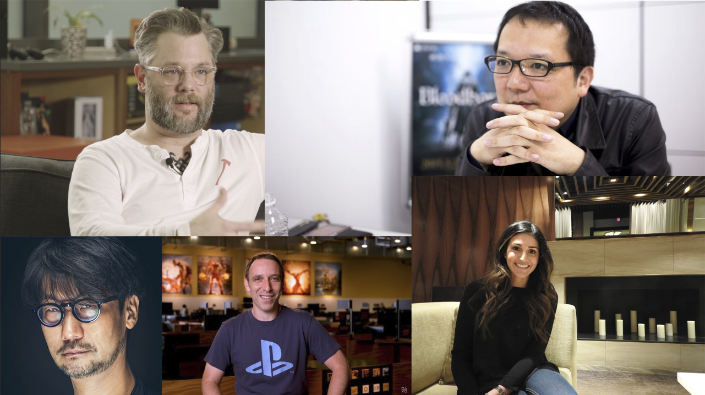

Who I Am
Hello, my name is Bor Dekker.
I am an Unreal Engine 5 generalist, I specialize working in Unreal Engine 5, Unreal Engine Sequencer, Blueprints and I would like to get work & get experience with MetaHuman, Houdini, Blender and more!
I'm born and living in the Netherlands with my family, I am 20 years old. In my free time, I enjoy playing video games, reading books / manga, watching movies / anime, watching devlogs on YouTube, programming and making small movies in Unreal Engine.
By programming my own projects & making my own films I can improve myself, my knowledge & skills.
I grew up with the Lego games, such as Lego Dimensions, Lego Marvel Avengers, Lego Star Wars and of course Minecraft as well. When I became older, I wanted to play games that were more realistic and good looking graphics.
Games like Call of Duty Black Ops, Jurassic World Evolution, Star Wars Battlefront and Batman Akrham Knight. But in 2018 a game came out that was my number one game for 3 years.
That game was God Of War, it was the first game where I was fully immersed in it's story, gameplay, environment and music.
Thanks to God of War, I was more focused on story, gameplay, design, music and environment. Because of God of War, I got in touch with Dark Souls and thanks to that with Bloodborne which became my number one game.
As of this moment I am playing a new souls game called Lies Of P, a horror game called Scorn and a horror game called Layers of Fear Remastered. These 3 games are all made with Unreal Engine 5 and it's stunning of what you can achieve with Unreal Engine 5.
Cuphead is a special game that I'd like to mention. It's a game that reminds me of those old cartoon games and Disney classic hand-made drawn movies, it has a beautiful 1930's art style, with a classic story of 2 boys having a run in with the devil.
Though the game's combat is quite challenging, I managed to beat the game and add it to my list of games I've played. I absolutely loved this game and I hope to see more games like this.
Scorn is a another special game that I'd like to mention. It's a game that has absolutely beautiful art, the art was inspired by 2 great artists. The great H.R. Giger and "Nightmare artist" Zdzisław Beksiński, H.R. Giger's work was in the theme of biomechanical art.
Humans and machines linked together in a beautiful cold relationship, he is also the one who created the Alien design from the 1979 movie.
"Nightmare artist" Zdzisław Beksiński was known for his fantastically surreal paintings, filled with death, destruction, skeletons, deserts and deformed figures, scenarios set in post-apocalyptic environments.
Scorn had beautifully replicated their art style, this game has a special place in my heart. Despite how short the game is, I never get tired of looking at the game's art.
It's because of games like these that I'm inspired to make story(driven), horror, soulslike games with their own spin around it. I have a few heroes in the game industry who have inspired me to make video games, I'd like to mention these heroes.
Game Director Cory Barlog from Santa Monica Studio who has created the God of War franchise is one of my heroes, I haven't played the old God of War games since I was to young at the time, but in 2018 I saw the trailer and loved it at first sight.
I watched YouTube videos to know what happened before the game, when the game came out and I played it for the first time, it was the best 10/10 game for me for 3 long years.
Game Director Hidetaka Miyazaki who has created the souls franchise, is another one of my heroes. He made Demon Souls, the game that started this entire genre and Dark Souls 1/3, Bloodborne, Sekiro and the newly acclaimed Elden Ring.
These games are beautiful lore games, where they tell you the basic story but not the full story and leave you with questions.
The community this genre has is beyond, everyone is working together to piece the story together or open each other to new interpretations of the story.
These games make you explore the world and search for answers so it helps you understand the story, I'd love to make a game like this.
Game Director Maja Moldenhauer created Cuphead, what I like most about this game is the 1930s art style and it's classic story.
The animations in this game is incredible and feel very fluent, they made it look perfectly like the animations from the 1930s. I hope to see other companies to make games like these, just as we see with the soulsgenre.
Where other companies make their own souls game, I'd like to see someone make their own version of Cuphead.
My hobbies are playing video games, reading, programming and watching movies/anime. I have a dog named Rover, he is a Golden Retriever and is over 4 years old. He likes attention and loves it when we go to the beach to let him out.
I love to play Magic The Gathering and D&D, I'm also a big fan of horror, mysteries, Star Wars and H.P. Lovecraft. I like to watch comedy shows such as The Office and some of my favorite movies are The Hateful Eight, Inglorious Bastards, Star Wars Episode III, Guillermo Del Toro Pinocchio and Zack Snyders Justice League.
My favorite games are Bloodborne, Elden Ring, God Of War(2018), Cuphead and Scorn.
I like playing on both consoles, so I can experience both consoles games. This is quite nice when it comes to console exclusive games, such as God Of War Ragnarok and Senua's Saga Hellblade.
Now I have the oppurtunity to experience more games that peak my interest.
As for my internship, I'm looking for an company that can help me develop my knowledge and skills in Unreal Engine 5. I wish to be better in the following skills such as Blueprints, C++, MetaHuman and film / cinematic making in Unreal Engine 5.
So that I can create my own films / cinematics for people to enjoy watching and make the games for people to enjoy playing.
I would be absolutely thrilled if I could make a film / game like Bloodborne, Scorn, Lies of P and Black Myth Wukong. All of these games are made in Unreal Engine and I hope more film / game studios will use the potential of Unreal Engine 5.
I have multiple dream projects in my head, but I'd like to mention a film project and a game project of mine.
I'd like to make a film project in the style of the game Scorn, H.R. Giger and Zdzisław Beksiński have truly inspired me to make something similar to this.
As for my game project I'd like to make it's a game mixed with horror and mythology, with the gameplay like of a soulslike.
Although these two dream projects of mine are quite big and could be very demanding if I were to make these alone, but I know it's going to be fun nonetheless.